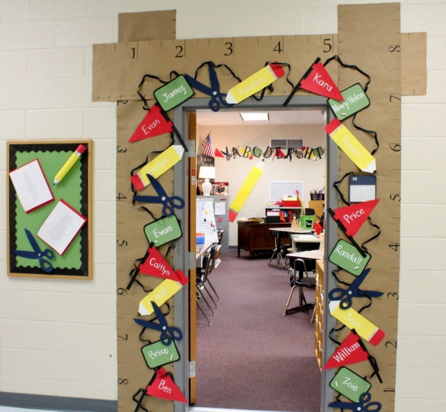
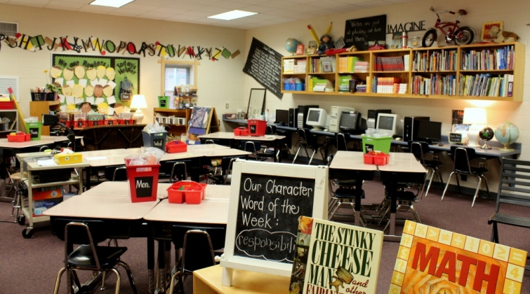

.png)
.PNG)
.PNG)
.PNG)
.PNG)
.PNG)
.JPG)
.JPG)
.PNG)
.PNG)


It’s August, and unfortunately, around here that means back to school time. Yes, you read that right….back to school. The children reported for their first day of classes last Wednesday, August 1st. It’s sooo hot and humid here in Georgia I feel sorry for the students (although we have had a little rain in the past few days.) They should be out swimming, running through sprinklers, or playing at a water park.
But instead, they are here….

And I am right here with them. Many of you already know that my “paying job” is teaching. A career in education takes over your life (if you allow it to as I have.) When I started this blog I wanted a place that was separate from my life as a teacher – a place where I could discuss things I love like houses and inns and parties – not lesson plans, standards, and tests. And let me tell you. I am loving this little place on the internet! Truly. I just wanted to let you know that I am back at work full time and will probably be slower in responding to your comments and emails – but I WILL get back to you. 🙂

So, what are we talking about here today? Well, in honor of all the children who have to be back in school we are going to look at rooms for them to play in. Even if you don’t have little ones, some of these rooms are just plain precious. I love the bright colors with the white in this one.
Organized storage is such an important part in any playroom. This one is beautiful, isn’t it? I think I would like a room like this for me!
Here is more pretty storage and a huge chalkboard too! lisasherryinterieurs.com
lisasherryinterieurs.com
This one has some nice built-ins. Look under the window seat too….and isn’t that window treatment wonderful?!
I believe this next little space is in a kitchen, but it would be perfect in a playroom too. That window seat is just so cozy. It’s perfect for snuggling up with a book or two. (How can you resist red checks?)
Alright, enough of the little areas within the rooms. Let’s look at a few bigger spaces. Don’t the stripes add so much here?
Look at the chalkboard walls all over this room! The children would have to love that.
And it is amazing how many playroom tents I found in my search –
like this one….. vogue.com
vogue.com
and this one…. houseandhome.com
houseandhome.com
and this one. themarionhousebook.com
themarionhousebook.com
Tents don’t seem to be the only common theme in these rooms. Take a look at how many times schoolhouse maps are used. This one is from National Geographic, and the owners built a frame around it.
This next one really does pull down like the ones in my classroom, and if you look closely, you will see that they also lined the back of the bookshelves with maps. Clever, huh? You could steal that idea for most any room in your house. How about an office space?

steven gambrel via visualcomfortblog.com
I really like this playspace because it doesn’t look so young. This is a room that can grow with the child.
And finally, I could not do a post on playrooms without including at least one from Pottery Barn Kids. Their play and study spaces are always a work of art to me when it comes to beauty and organization.
There are so many gorgeous rooms for children out there, but I have to stop “playing” and get back to doing some work. Even if you don’t have little ones around your house, I hope your inner child enjoyed seeing these rooms, and I am sure you are all going to set up a tent in some room of your house now! 🙂
Actually, what I would really like to know is…
Do you have a playroom for children in your home?

p.s. Pottery Barn has a cute book of kid spaces if you want to see more from them.

Pottery Barn Kids: Kids’ Rooms
(an Amazon Affiliate link)


.PNG)
Love your classroom and your entry!! please share how you made that – the scissors and the pencils! So adorable! This blog has been my entertainment for almost a week! Reading back through all the posts I’ve missed!
Oh, and I should mention that I just found your blog by clicking on your comment on “The Inspired Room”… just so you know. I will be your newest follower. 🙂
———————————————————————
Lisa – I am so glad Melissa’s blog led you over here!! I used to teach 1st grade for many years. I think that is the most important grade in all of school. An old school desk in your living room would be such a neat touch and a great thing to have for homework. Thank you for reading and leaving your sweet words!
Please do come back to visit again.
Kelly
Oh, how fun these rooms are! I wish we had an extra room to use as a play room. My son’s bedroom is his playroom as well though. I’ve been craving an old school desk for him, which I would put in the livingroom for homework time. Yes, back to school, it’s hard to believe! He started 1st grade this week.
I had no idea you were a teacher! How did I miss that? I love your classroom, especially your door. This is my second fall not going back to school myself, and it does take a little getting used to. I know exactly what you mean about how it consumes every waking second, but I sure hope you find some time to post a midst all of it. Have a great school year, Kelly!
——————————————————————-
Susan – You didn’t miss it. I have intentionally not mentioned it until now. I envy you not going back to school! Thank you for the well wishes for the school year.
Kelly
Oh girl, special education teacher here. Since we just moved I will not be going back to work…probably. I’m excited and also sad. I miss the kids and my teacher friends already. If you look back through my blog over the last few years you will see that during school the posts hardly happen. I will understand if we don’t hear from you.
———————————————————————
Stacey – You had a VERY challenging job. Lucky you if you don’t have to go back to work. I hope I can keep up with everything. I have lots of good things planned for the next few months on the blog…especially at Christmas. That is going to be my most challenging time I know, and given enough time, I could write a year’s worth of posts on Christmas decorating alone!
Kelly
Kelly, I just retired from teaching in May and your post makes me long again for decorating my room! It does not, however, make me miss the grading or the parents !
———————————————————————
Wanda – I love the actual “teaching” and the kids and the room decorating too, but I could surely give up all the darn paperwork!
Kelly
Kelly,
What a fun post. As a full time employee of the corporate world I completely understand the delicate balance between work and fun (blogland)!
We are currently researching possibilities for bedding that will share space in our study for regular visits from our granddaughter. I love the window seats in several of the rooms. Maybe all we need is a sleeping bag and a tent, Olivia would probably love that!
Hope your first week back to school has been promising with a great classroom of darling children.
Karen
——————————————————————–
Karen – Blogland is definitely my fun escape! Wish our house had a window seat somewhere. There was supposed to be one in our study, but its space got taken over by a file cabinet (not nearly as charming!) I bet your Olivia (love her name!) would be thrilled with a tent and sleeping bag. There are many to choose from out there.
First days of school have been good!
Kelly
I used to love the first day of school, and I still do! First, I taught in public school–not long–six years. Then, I had kids. Now, I homeschool. I still love the first day of school! We’re going to start next week. I’ll have to post about our little school room soon. Thanks for the inspiration.
Your classroom is so super lovely! What lucky students they are to have such a thoughtful teacher as you who cares enough to put such time and effort into their environment. I can’t even imagine the effort you put into the planning and teaching.
———————————————————————
Julianna – Six years is pretty long for teaching…many don’t make it past the first. This is my 31st year in public education. I have a precious bunch of students and a fantastic team to work with – and we all put in unreal hours, both at the school and with the work we bring home.
You SHOULD do a post on your school room. It’s back to school “season” and I know everyone would love to see it.
As always, thank you for your wonderfully thoughtful comments.
Kelly
Those are some really cute ideas! We’re about to get a room back that a 25 year old has been inhabiting so we’re really excited to be able to do something fun in there for the four grandkiddos that come over for visits! I’m pinning ideas galore for that room! And funny thing….Pottery Barn Kids is my five year old granddaughter’s fav store at the mall. She goes in there and pretends all those scrumptious spaces are her room!!!
One thing I’m at a quandary over is the colors. We have four granddaughters and one grandson so I’m stumped on what colors to use. But after your post, I’m liking the red checks! I can totally see that in the room!
Thanks for sharing and have a great school year!
——————————————————————-
Jaye – Playrooms are so much fun to do, aren’t they? It’s like you get a chance to have your second childhood! Your granddaughter and I should go shopping together because pbkids is one of MY favorite stores too…I even asked the manager for the paint color of the store one time! Go for the red checks. You can’t go wrong with them! (and just think how cute it will be at Christmas!)
Kelly
Give me any playroom with a tent and I’m sold. Adore the image from Vogue!
———————————————————————-
Kristy – That one from Vogue IS great! Besides the cute tent, I love that window, the walls, the black and white photography, and the flooring…lots to love!
Kelly
I don’t have little ones running around here every day but I loved seeing those cool play spaces, especially the ones with tents!
But Kelly, I’m guessing those first pictures are of the entrance to your classroom and your actual classroom itself….what a wonderful job you’ve done! Such creativity…any child would feel welcome walking in and sitting down to learn. I’d love to sit in your class any day!
The grands start here on the 20th so I have a few more days to spend with them….it’s been an interesting summer to say the least!
———————————————————————–
Judy – Aren’t those tents great? We used to throw quilts over chairs when our children were little! Yes, those photos are of my classroom. Thank you for the compliments. You can come and be in my class anytime you like – but let me caution you, we work super hard!!
Enjoy your grandkids for the last few days of summer.
Kelly
Wow! Back to school already? My kids still have a few weeks of summer left.
This post is so timely. I’ve been trying to de-clutter, which gives me hopes for our little playroom. Storage and organization are key.
————————————————————————
Deborah – I am so jealous that you all have WEEKS left! Good luck with de-cluttering your playroom. There are so many pretty things available for storage and organization that it could possibly be fun to do.:)
Kelly